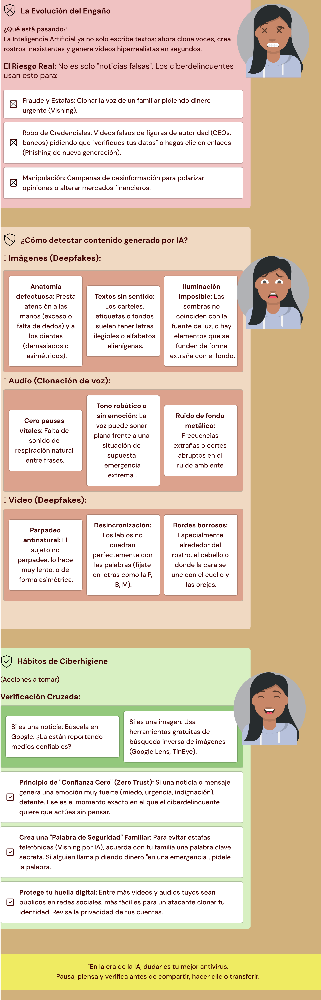

In this post, I want to share some of my knowledge as a cybersecurity analyst. I still have a lot to learn and practice,
but I feel a great affinity for sharing information about best practices for users and cybersecurity education.
So, despite not being in English, I would like to share this infographic in Spanish about the dangers in the AI era, along with some ideas on how to prevent them.
